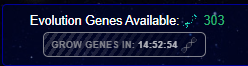

| Source | Type | Value | Duration | Active? |
|---|---|---|---|---|
| Amerase, Genoform Entity | Ally | 9% | - | |
| Augmentation Initiative | Talent | 5% | - | |
| Epigenetic Learning | Evolution - Human | 9% | - | |
| Genome-Sync Initiative | Petitioners Suite | 7% | 30 hours | |
| Hyperfertility | Planet-Based Ability | 9% | 30 hours | |
| Epigenetic Propagator | Artifact | 6% | 30 hours | |
| Undulok Biomarkers | Artifact | 11% | 90 hours | |
| Phylogenetic Core | Structure Ability | 14% | 3 days |
| Source | Type | Value | Duration | Active? |
|---|---|---|---|---|
| Amerase, Genoform Entity | Ally | 7% | - | |
| Species Mutagenics Program | Talent | 3% | - | |
| Genoform Surge (2026) | Seasonal | 30% | - | |
| Cross-Genomic Instinct | Evolution - Aerlen | 8% | - | |
| Decree of Fecundity | Petitioners Suite | 6% | 20 hours | |
| Biologist | Profession | 15% | - | |
| Biosphere Proliferation | Planet-Based Ability | 9% | 10 hours | |
| Sporewell Flow | Planet-Based Ability | 10% | 40 hours | |
| Extragalactic Genes | Artifact | 20% | 40 hours | |
| Gene Archives | Artifact | 7% | 40 hours | |
| Harvested Genomics | Artifact | 11% | 40 hours | |
| Neutro-Cellular Bonder | Artifact | 10% | 20 hours |
| Source | Type | Value | Duration | Active? |
|---|---|---|---|---|
| Proteomic Sculpting | Evolution - Aerlen | 1 | - | |
| Nucleome Compiler | Module | 1 | - |
| Source | Type |
|---|---|
| Epigenetic Surge Response | Evolution - Human |
| Intracellular Awareness | Evolution - Kronyn |
| Bio-Mechanics Accord | Petitioners Suite |
| Genome-Sync Initiative | Petitioners Suite |
| Specimen Extract | Planet-Based Ability |
| Tabula Progenis | Artifact |
| Source | Type | In Effect | Value | Active? |
|---|---|---|---|---|
| Ambassador Thelaru | Modify Yield | TBD | 11% | |
| Ambassador Thelaru | Modify Cooldown | TBD | 11% | |
| Hasten Cure | Modify Cooldown | Start: 24 Jun 2026 Duration: 14 days | 11% | |
| Purge Gene Vaults | Modify Yield | Did not pass | -6% | |
| VTP-5 Mutagen: Failure | Modify Yield | Did not pass | -10% |